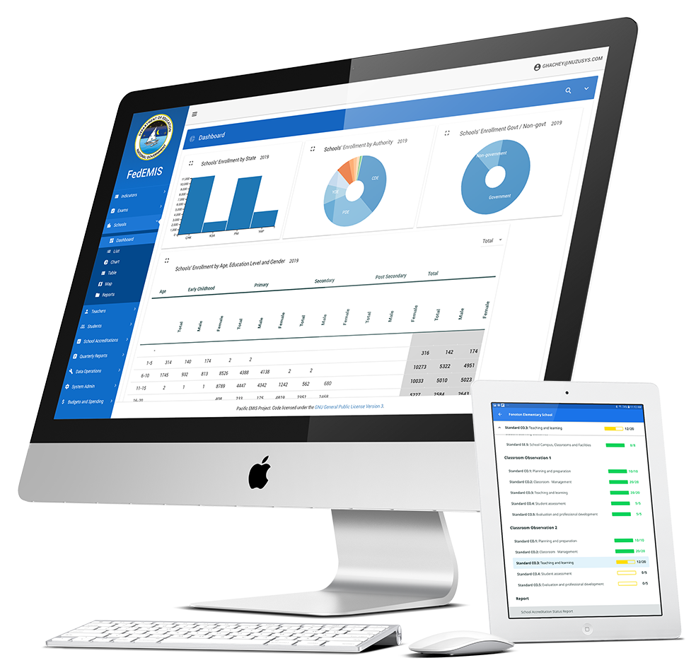

Pacific EMIS
A modern high-end education management information system designed for small Pacific Island Nations
Learn More

We strive to improve data quality in the challenging environment of the Pacific Islands by stricking a balance between high end software design behind the scene with simple to use user interface that meet the every day challenges of remote islands with low to no Internet connectivity.
All the software written for the Pacific EMIS project is released as open source software. Due to its nature it is not an easy deployment and getting started can be a little daunting. But the source code is open and belongs to the community and always will.
While the software is freely available to all to use, learn from, adopt and customize it's often the case support is needed to get things to the next level. The Pacific EMIS has a growing list of experts able to support you in your undertaking.
The Pacific EMIS web application is a modern single web page application based on the Microsoft SQL Server (free Express edition works fine), .NET framework and TypeScript and Angular stack. The main web application is where users can access all their data, data analysis dashboards, dynamically generated reports and various related tools. This tool is meant for internal user such as the staff of national or district level departments of education.
Read moreThe Pacific EMIS is fully integrated with the enterprise grade open source reporting platform JasperReports. Users of the Pacific EMIS can avail of a large collection of pre-built professionally developed reports and/or design their own custom reports to integrate with their deployment.
The Pacific EMIS Education Survey Tool is an Android app developed in Java designed to collect any sort of data that is inhenrently survey-like (e.g. school inspection, WASH). The app works with or without the Internet making it ideal in the Pacific context and beyond. Once the tablet does have access to the Internet it has the ability to sync to the Pacific EMIS cloud with full integration with the Pacific EMIS web app where users can access their data surveys and load them into the system for further analysis and reporting.
While an Education Management Information System is a higher level tool used within the national and/or district level departments of education it is not specifically designed to help the schools with their day to day operations and data management; this is typically the purpose of Student Information Systems (aka. School Information System). There are various SIS schools can opt for whether paid for, free open source, or custom designed. Currently the Pacific EMIS projects uses a adapted version of open source SIS OpenSIS. There is on-going work to integrate this open source SIS more intimately into the Pacific EMIS. But the integration should not stop at OpenSIS. The schools should have the liberty to choose their SIS when they want while still being able to feed in the EMIS in a consistent way for high level data analysis and reporting.
People like to own their own data and be able to process it themselves. Whether this is because they need to present their data to their supervisors or have data requests from international donors, consultants or organizations. Sometimes the pre-built reports are just not sufficient. Accessing data in a normalized database is painstakingly difficult and often requires software programmers. To address this need the Pacific EMIS has a professional data warehouse that packages all data into formats easily understandable and processable by data analysists and statisticians without programming knowledge. The warehouse tables and views can be loaded into Excel or statistics software of your choice providing the ultimate flexibility.
Most people are used to working with the common office applications such as Microsoft Word, Excel and Power Point. Using the Data Warehouse the staff can pull in the data into Excel for publishing into their own reports and presentations. We even have tools to help in the preparation of data reports such as Annual Education Statistics Digest.
In a push to continuously improve the dissemination of data and information we have pioneered the Pacific Open Education Data app available in both the Android and iOS stores to the general public. This public open data app is a work in progress that aims to put the data and information directly in the palm of your hands. Whether you are a teacher, principal, data analyst, a high level decision maker, a researcher or a consultant we think you will enjoy this app and would appreciate your feedback to help us constantly improve it going forward.
Read moreSince there are various components to the Pacific EMIS project there is also various documentation/ For example, there is documentation for users of the system, for systems administrators and those involved in the maintenance of the system and for developers who contribute to the software development. All the documentation is accessed from the same place though adopting countries may also have their own additional documentation
Project DocumentationAs stated above, essentially all components of the Pacific EMIS project is open source in nature. There are several components to this large initiative and the source code can be found in different places, in different programming languages, based on different other open source frameworks.
Source CodeThere are already users of the Pacific EMIS project constantly improving their data. You can join also. Note that this is a large initiative with ambitious goals and getting started is not easy. But we are here to help so if you are interested you can simply contact us by email and will we do what we can to help.
Contact UsThe Pacific EMIS project has roots dating back over a decade and has been in used in various countries to various degrees. However, since 2016 it has been completely revamped and modernized into this open source project. What is left from its roots is mostly the data model and lots of battle tested data management procedures behind the scene.
Contact Us